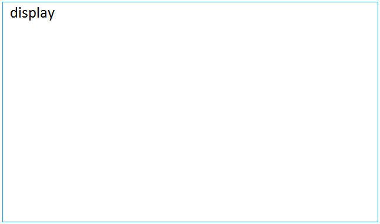
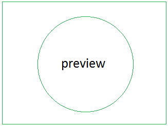
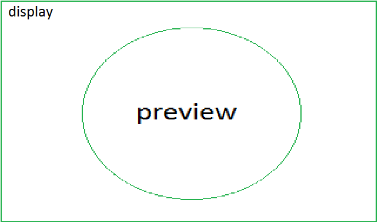
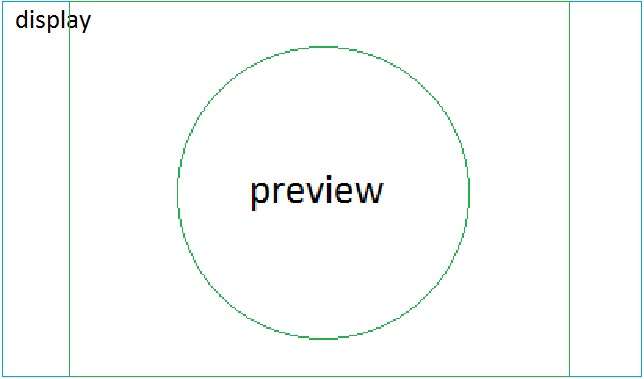
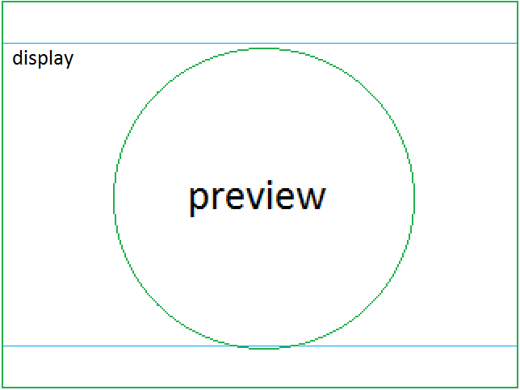
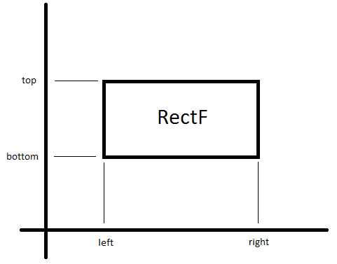
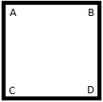
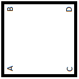

В этом уроке:
- используем объект Camera для получения изображения с камеры
- подгоняем изображение под размеры экрана
- учитываем поворот устройства
Разберемся, какие основные объекты нам понадобятся для вывода изображения с камеры на экран. Их три: Camera, SurfaceView, SurfaceHolder.
Camera используется, чтобы получить изображение с камеры. А чтобы это изображение в приложении отобразить, будем использовать SurfaceView.
Нормального перевода слова Surface я не смог подобрать. «Поверхность» - как-то слишком абстрактно. Поэтому так и буду называть – surface. Это будет означать некий компонент, который отображает изображение с камеры.
Работа с surface ведется не напрямую, а через посредника – SurfaceHolder (далее holder). Именно с этим объектом умеет работать Camera. Также, holder будет сообщать нам о том, что surface готов к работе, изменен или более недоступен.
А если подытожить, то: Camera берет holder и с его помощью выводит изображение на surface.
Напишем приложение, в котором реализуем вывод изображения с камеры на экран.
Создадим проект:
Project name: P1321_CameraScreen
Build Target: Android 4.0
Application name: CameraScreen
Package name: ru.startandroid.develop.p1321camerascreen
Create Activity: MainActivity
Экран main.xml:
<?xml version="1.0" encoding="utf-8"?>
<FrameLayout
xmlns:android="http://schemas.android.com/apk/res/android"
xmlns:tools="http://schemas.android.com/tools"
android:layout_width="match_parent"
android:layout_height="match_parent">
<SurfaceView
android:id="@+id/surfaceView"
android:layout_width="wrap_content"
android:layout_height="wrap_content"
android:layout_gravity="center">
</SurfaceView>
</FrameLayout>SurfaceView по центру экрана.
В манифест добавьте права на камеру: <uses-permission android:name="android.permission.CAMERA"/>
MainActivity.java:
package ru.startandroid.develop.p1321camerascreen;
import java.io.IOException;
import android.app.Activity;
import android.graphics.Matrix;
import android.graphics.RectF;
import android.hardware.Camera;
import android.hardware.Camera.CameraInfo;
import android.hardware.Camera.Size;
import android.os.Bundle;
import android.view.Display;
import android.view.Surface;
import android.view.SurfaceHolder;
import android.view.SurfaceView;
import android.view.Window;
import android.view.WindowManager;
public class MainActivity extends Activity {
SurfaceView sv;
SurfaceHolder holder;
HolderCallback holderCallback;
Camera camera;
final int CAMERA_ID = 0;
final boolean FULL_SCREEN = true;
@Override
protected void onCreate(Bundle savedInstanceState) {
super.onCreate(savedInstanceState);
requestWindowFeature(Window.FEATURE_NO_TITLE);
getWindow().setFlags(WindowManager.LayoutParams.FLAG_FULLSCREEN,
WindowManager.LayoutParams.FLAG_FULLSCREEN);
setContentView(R.layout.main);
sv = (SurfaceView) findViewById(R.id.surfaceView);
holder = sv.getHolder();
holder.setType(SurfaceHolder.SURFACE_TYPE_PUSH_BUFFERS);
holderCallback = new HolderCallback();
holder.addCallback(holderCallback);
}
@Override
protected void onResume() {
super.onResume();
camera = Camera.open(CAMERA_ID);
setPreviewSize(FULL_SCREEN);
}
@Override
protected void onPause() {
super.onPause();
if (camera != null)
camera.release();
camera = null;
}
class HolderCallback implements SurfaceHolder.Callback {
@Override
public void surfaceCreated(SurfaceHolder holder) {
try {
camera.setPreviewDisplay(holder);
camera.startPreview();
} catch (IOException e) {
e.printStackTrace();
}
}
@Override
public void surfaceChanged(SurfaceHolder holder, int format, int width,
int height) {
camera.stopPreview();
setCameraDisplayOrientation(CAMERA_ID);
try {
camera.setPreviewDisplay(holder);
camera.startPreview();
} catch (Exception e) {
e.printStackTrace();
}
}
@Override
public void surfaceDestroyed(SurfaceHolder holder) {
}
}
void setPreviewSize(boolean fullScreen) {
// получаем размеры экрана
Display display = getWindowManager().getDefaultDisplay();
boolean widthIsMax = display.getWidth() > display.getHeight();
// определяем размеры превью камеры
Size size = camera.getParameters().getPreviewSize();
RectF rectDisplay = new RectF();
RectF rectPreview = new RectF();
// RectF экрана, соотвествует размерам экрана
rectDisplay.set(0, 0, display.getWidth(), display.getHeight());
// RectF первью
if (widthIsMax) {
// превью в горизонтальной ориентации
rectPreview.set(0, 0, size.width, size.height);
} else {
// превью в вертикальной ориентации
rectPreview.set(0, 0, size.height, size.width);
}
Matrix matrix = new Matrix();
// подготовка матрицы преобразования
if (!fullScreen) {
// если превью будет "втиснут" в экран (второй вариант из урока)
matrix.setRectToRect(rectPreview, rectDisplay,
Matrix.ScaleToFit.START);
} else {
// если экран будет "втиснут" в превью (третий вариант из урока)
matrix.setRectToRect(rectDisplay, rectPreview,
Matrix.ScaleToFit.START);
matrix.invert(matrix);
}
// преобразование
matrix.mapRect(rectPreview);
// установка размеров surface из получившегося преобразования
sv.getLayoutParams().height = (int) (rectPreview.bottom);
sv.getLayoutParams().width = (int) (rectPreview.right);
}
void setCameraDisplayOrientation(int cameraId) {
// определяем насколько повернут экран от нормального положения
int rotation = getWindowManager().getDefaultDisplay().getRotation();
int degrees = 0;
switch (rotation) {
case Surface.ROTATION_0:
degrees = 0;
break;
case Surface.ROTATION_90:
degrees = 90;
break;
case Surface.ROTATION_180:
degrees = 180;
break;
case Surface.ROTATION_270:
degrees = 270;
break;
}
int result = 0;
// получаем инфо по камере cameraId
CameraInfo info = new CameraInfo();
Camera.getCameraInfo(cameraId, info);
// задняя камера
if (info.facing == CameraInfo.CAMERA_FACING_BACK) {
result = ((360 - degrees) + info.orientation);
} else
// передняя камера
if (info.facing == CameraInfo.CAMERA_FACING_FRONT) {
result = ((360 - degrees) - info.orientation);
result += 360;
}
result = result % 360;
camera.setDisplayOrientation(result);
}
}Смотрим код.
В onCreate настраиваем Activity так, чтобы оно было без заголовка и в полный экран. Затем мы определяем surface, получаем его holder и устанавливаем его тип = SURFACE_TYPE_PUSH_BUFFERS (настройка типа нужна только в Android версии ниже 3.0).
Далее для holder создаем callback объект HolderCallback (о нем чуть дальше), через который holder будет сообщать нам о состояниях surface.
В onResume получаем доступ к камере, используя метод open. На вход передаем id камеры, если их несколько (задняя и передняя). Этот метод доступен с API level 9. В конце этого урока есть инфа о том, как получить id камеры.
Также существует метод open без требования id на вход. Он даст доступ к задней камере. Он доступен и в более ранних версиях.
После этого вызываем метод setPreviewSize, в котором настраиваем размер surface. Его подробно обсудим ниже.
В onPause освобождаем камеру методом release, чтобы другие приложения могли ее использовать.
Класс HolderCallback, реализует интерфейс SurfaceHolder.Callback. Напомню, что через него holder сообщает нам о состоянии surface.
В нем три метода:
surfaceCreated – surface создан. Мы можем дать камере объект holder с помощью метода setPreviewDisplay и начать транслировать изображение методом startPreview.
surfaceChanged – был изменен формат или размер surface. В этом случае мы останавливаем просмотр (stopPreview), настраиваем камеру с учетом поворота устройства (setCameraDisplayOrientation, подробности ниже), и снова запускаем просмотр.
surfaceDestroyed – surface более недоступен. Не используем этот метод.
С этими методами, кстати, есть одна странность. В документацие к методу surfaceChanged написано, что он обязательно будет вызван не только при изменении, но и при создании surface, т.е. сразу после surfaceCreated. Но при этом в документацие к камере методы запуска просмотра (setPreviewDisplay, startPreview) вызываются и в surfaceCreated и в surfaceChanged. Т.е. при создании surface мы зачем-то два раза стартуем просмотр. Мне непонятно, зачем нужно это дублирование.
Если очистить метод surfaceCreated, то все продолжает работать. Но в уроке я, пожалуй не рискну так делать. Вдруг я чего не понимаю и в этом есть какой-то смысл. Если кто знает – пишите на форуме.
Размер превью
Метод setPreviewSize. Немного нетривиальный, особенно если вы никогда не работали с объектами Matrix и RectF.
В нем мы определяем размеры surface с учетом экрана и изображения с камеры, чтобы картинка отображалась с верным соотношением сторон и на весь экран.
Дальнейшие выкладки можно пропустить, если неохота мозг ломать и вникать в механизм. Хотя я постарался сделать эти выкладки понятными, интересными и даже картинки нарисовал. Если вы все поймете, будет отлично!) Когда-нибудь эти знания пригодятся.
Итак, у нас есть картинка, которая приходит с камеры – назовем ее превью. И у нас есть экран, на котором нам надо это превью отобразить.
Рассмотрим конкретный пример, чтобы было нагляднее. Планшет Galaxy Tab, задняя камера, нормальное горизонтальное положение.
Есть экран. Размер: 1280x752. Соотношение сторон: 1280/752 = 1,70

Есть превью. Размер: 640x480. Соотношение сторон: 640/480 = 1,33.

Допустим, что мы камеру навели на какой-то круг.
Мы хотим получить картинку на весь экран. Какие есть варианты? Их три.
1) Растянуть превью на экран. Плохой вариант, т.к. для этого соотношение сторон должно быть одинаковым, а у нас оно разное. Но все же попытаемся, чтобы увидеть результат.
Для этого нам ширину превью надо умножить на 1280/640 = 2. А высоту на 752/480 = 1,57. В итоге имеем:

видно, что картинка деформировалась и стала растянутой по горизонтали. Нам это не подходит.
2) Втиснуть превью в экран с сохранением пропорций. Для этого мы будем менять размеры превью (сохраняя соотношение сторон), пока оно изнутри не упрется в границы экрана по высоте или ширине. В нашем случае оно упрется по высоте.
Для этого нам надо умножить ширину и высоту превью на меньшее из чисел: 1280/640 = 2 и 752/480 = 1,57, т.е. на 1.57.
Смотрим, чего получилось

стало гораздо лучше. Теперь картинка превью не искажена. Единственное, что немного смущает – пустые области по бокам экрана. Но ничего не мешает закрасить их черным и пусть все думают, что так и задумано. Зато мы будем видеть полную и неискаженную картинку. Так, например, обычно делается в видео-плеерах.
3) Втиснуть экран в превью. Т.е. сделать второй вариант наоборот. Менять размер экрана (сохраняя соотношение сторон) до тех пор пока он изнутри не упрется в границы превью по высоте или ширине.
Для этого нам надо было бы ширину и высоту экрана разделить на большее из чисел: 1280/640 = 2 и 752/480 = 1,57, т.е. на 2.
Но т.к. менять размеры экрана мы не можем физически, то мы будем менять размеры превью чтобы достигнуть описанного результата.
Для этого нам надо умножить ширину и высоту превью на большее из чисел: 1280/640 = 2 и 752/480 = 1,57, т.е. на 2.
Результат

Картинка не искажена и занимает полный экран. Но есть нюанс. Мы не видим всего изображения. Оно выходит за границы экрана сверху и снизу.
На всякий случай укажу, что это лишь один пример. В других может быть по другому. Например, во втором варианте пустые области могут быть не по бокам, а сверху и снизу. А на мелких девайсах размер превью будет больше размера экрана. Но общий смысл и алгоритм от этого не меняются.
Мы рассмотрели три варианта, и увидели, что первый совсем плох, а второй и третий вполне годятся для реализации.
От картинок возвращаемся к коду. Метод setPreviewSize(boolean fullScreen) реализует второй (если fullScreen == false) и третий (если fullScreen == true) варианты.
Красота метода в том, что все преобразования за нас делает Matrix (матрица). И нам самим не надо будет ничего умножать или делить.
Сначала мы получаем размеры экрана и превью. Для экрана сразу выясняем что больше: ширина или высота. Т.е. если ширина больше, то устройство находится в горизонтальной ориентации, если высота больше – в вертикальной.
Для преобразований матрица потребует от нас RectF объекты. Если никогда еще не работали с ними, то это просто объект, который содержит координаты прямоугольника: left, top, right, bottom.

В качестве left и top мы всегда будем использовать 0, а в right и bottom помещать ширину и высоту экрана или превью. Тем самым мы будем получать прямоугольники точно совпадающие по размерам с экраном и превью.
rectDisplay – экран, rectPreview – превью. У превью обычно ширина всегда больше высоты. Если устройство в горизонтальной ориентации, то мы создаем rectPreview соответственно его размерам. А если устройство вертикально, то изображение с камеры будет также повернуто вертикально, следовательно ширина и высота поменяются местами.
Теперь самое интересное – подготовка преобразования. Используем метод setRectToRect. Он берет на вход два RectF. И вычисляет, какие преобразования надо сделать, чтобы первый втиснуть во второй. Про третий параметр метода я сейчас рассказывать не буду, мы всегда используем START. (Если все же интересно, задавайте вопрос на форуме, там обсудим)
Т.е. этот метод пока не меняет объекты. Это только настройка матрицы. Теперь матрица знает, какие расчеты ей надо будет произвести с координатами объекта, который мы ей позже предоставим.
Смотрим код. Если (!fullScreen), то это второй вариант, т.е. превью будет втиснут в экран. Для этого мы просто сообщаем матрице, что нам объект с размерами превью надо будет втиснуть в объект с размерами экрана. Т.е. если обратиться ко второму варианту, то матрица поняла, что ей надо будет умножить стороны объекта на 1.57. И когда мы ей потом предоставим объект с размерами превью – она это сделает и мы получим необходимые нам размеры.
Если же fullScreen (третий вариант), то алгоритм чуть сложнее. Мы сообщаем матрице, что нам надо объект с размерами экрана втиснуть в объект с размерами превью. Смотрим третий вариант. Поначалу мы выяснили, что экран надо будет разделить на два. Но потом мы поняли, что мы не можем менять размеры экрана и нам надо делать наоборот – не экран делить на два, а превью умножить на два. Это мы можем объяснить и матрице вызвав метод invert. Матрица возьмет алгоритм из переданной ей матрицы (т.е. из самой себя), и сделает все наоборот. Т.е. вместо того, чтобы разделить на два – умножит.
Очень надеюсь, что изложил понятно. Если же не понятно – перечитайте раз 5 и сверяйтесь с описанием вариантов и картинками в примере выше. Если все равно не понятно, вернитесь к этому где-нить через недельку. Мозг к тому времени уже усвоит и как-то уложит эту инфу. И повторное прочтение может пройти гораздо легче. По крайне мере у меня обычно это так) Я могу что-то прочесть – ничего не понять. Но через неделю/месяц/полгода снова заглянуть туда и удивиться: «а что здесь собственно непонятного то было?»
Итак, мы подготовили матрицу к преобразованию, осталось только вручить ей объект, который она этим преобразованием подвергнет. Для этого используем метод mapRect и передаем ему объект с размерами превью. Как и в примере выше, все преобразования мы будем проводить с ним.
После проведения преобразований мы берем получившиеся координаты и настраиваем по ним surface, которое отображает превью.
Поворот превью
Если мозг еще не разрушен, сейчас мы это исправим! Разбираем метод setCameraDisplayOrientation, который будет превью вращать.
Снова рассмотрим пример, когда используется планшет в горизонтальном состоянии, камера – задняя. Допустим, мы через камеру смотрим на такой объект:

Видим его на экране, все ок.
Важное замечание. Через стандартное приложение камеры нижеописанный пример не воспроизведется, т.к. стандартное приложение обрабатывает поворот устройства. А я хочу продемонстрировать, что было бы если бы не обрабатывало.
Я поворачиваю планшет по часовой (направо) на 90 градусов. При этом, разумеется поворачивается и камера. На экране я вижу теперь такую картинку:

Кстати, такую же картинку увидите и вы, если наклоните голову вправо на 90 градусов)
Т.е. система хоть и среагировала на поворот и повернула основное изображение, но камера возвращает нам именно такой повернутый вид. Его мы и видим.
Что надо сделать, чтобы это исправить? Повернуть картинку на 90 по часовой. Т.е. сделать тот же поворот, что сделала камера.
Получилась Аксиома Поворота Камеры: насколько и в какую сторону повернута камера, на столько же и в ту же сторону нам надо поворачивать и превью, чтобы получать правильную картинку.
Для этого будем использовать метод setDisplayOrientation. Он принимает на вход угол, на который камера будет поворачивать по часовой превью, перед тем как отдать его нам. Т.е. от нас ждут угол поворота превью по часовой. Его мы можем узнать, выяснив насколько повернута по часовой камера (см. Аксиому Поворота Камеры).
Для этого используем такую конструкцию - getWindowManager().getDefaultDisplay().getRotation(). Она возвращает нам градусы, на которые система поворачивает изображение по часовой, чтобы оно нормально отображалось при поворотах устройства.
Т.е. когда вы наклоняете устройство на 90 против часовой, система должна поворачивать изображение на 90 по часовой, чтобы компенсировать поворот. (сейчас речь не о камере, а просто об изображении которое показывает телефон, например - Home)
Аксиома Поворота Устройства: насколько и в какую сторону повернуто устройство, на столько же, но в другую сторону система поворачивает изображение, чтобы получать его в правильной ориентации.
Отсюда следует, что getWindowManager().getDefaultDisplay().getRotation() сообщает нам насколько устройство повернуто против часовой.
Кстати, от getRotation мы получаем константы, а далее в switch преобразуем их в градусы.
Итак, переменная degrees содержит кол-во градусов, на которые повернуто устройство против часовой.
До сих пор мозг цел? Тогда держите такой факт: камера в устройстве может быть повернута относительно этого устройства.
Так обычно делается на смартфонах. Т.е. там камера повернута на 90 градусов. И ее нормальная ориентация совпадает с горизонтальной ориентацией устройства. Чтобы и в превью и на экране ширина получалась больше высоты.
И вот этот поворот нам тоже надо учитывать при повороте превью. Получить данные о камере можно методом getCameraInfo. На вход требует id камеры и объект CameraInfo, в который будет помещена инфа о камере.
Нас интересует поле CameraInfo.orientation, которое возвращает на сколько по часовой надо повернуть превью, чтобы получить нормальное изображение. Т.е. исходя из Аксиомы Поворота Камеры – на столько же повернута по часовой и сама камера.
Ну и добиваем мозг следующим фактом. Камера может быть задней и передней (фронтальной). И для них по разному надо считать повороты)
Поле CameraInfo.facing содержит инфу о том, какая камера – задняя или передняя.
Попробуем посчитать. Напомню, что метод setDisplayOrientation ждет от нас градус поворота превью по часовой. Т.е. мы можем просто посчитать поворот камеры по часовой (Аксиома Поворота Камеры) и получим нужное значение.
Чтобы узнать итоговый поворот камеры по часовой в пространстве – надо сложить поворот устройства по часовой и CameraInfo.orientation. Это для задней камеры. А для передней – надо CameraInfo.orientation вычесть, потому что она смотрит в нашу сторону. И все, что для нас по часовой, для нее - против.
Все, считаем. У нас есть degrees - кол-во градусов, на которые повернуто устройство против часовой. Чтобы конвертнуть это кол-во в градусы по часовой, надо просто вычесть их из 360.
Т.е. (360 – degrees) – это поворот устройства по часовой. Я специально выделил в коде это выражение скобками для наглядности. Далее мы к этому значению прибавляем или вычитаем (задняя или передняя камера) встроенный поворот камеры. В случае с передней камерой на всякий случай прибавляем 360 градусов, чтобы не получилось отрицательное число. И в конце определяем итоговое кол-во градусов в пределах от 0 до 360, вычисляя остаток от деления на 360.
И торжественно передаем камере это значение.
На редкость мозгодробительная штука – работа с камерой, правда? В итоге, когда вы все это запустите, вы должны видеть адекватное изображение с камеры.
В начале кода есть две константы: CAMERA_ID и FULL_SCREEN.
Если у вас две камеры, вы можете передать в CAMERA_ID не 0, а 1, и получите картинку с передней камеры.
Ну а меняя FULL_SCREEN изменяйте вид превью.
Прочее
Как определить, есть ли камера в устройстве? Об этом сообщит конструкция context.getPackageManager().hasSystemFeature(PackageManager.FEATURE_CAMERA)
Получить id камеры, можно используя метод getNumberOfCameras (доступен с API Level 9). Он вернет нам некое кол-во камер N, которые доступны на устройстве. Соответственно их ID будут 0, 1, …, N-1. По этому id уже получаете CameraInfo и определяете, что это за камера.
Метод open может вернуть Exception при запуске если по каким-то причинам не удалось получить доступ к камере. Имеет смысл это обрабатывать и выдавать сообщение пользователю, а не вылетать с ошибкой.